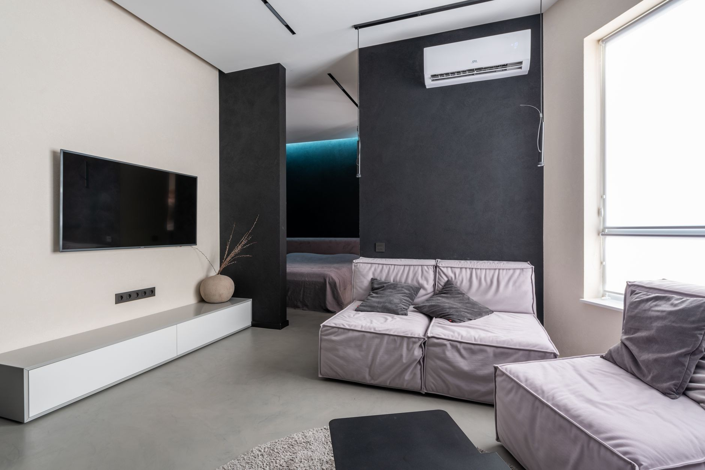
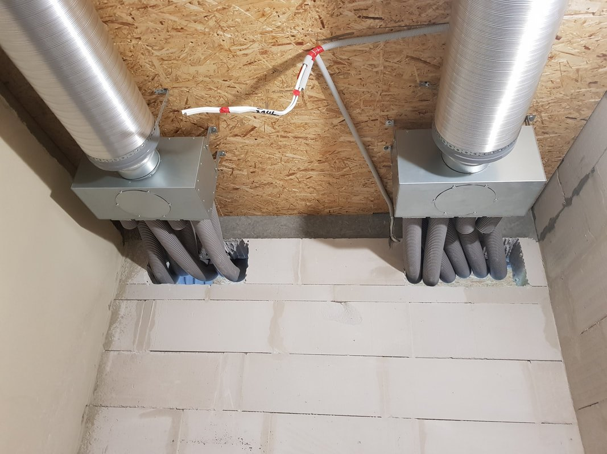
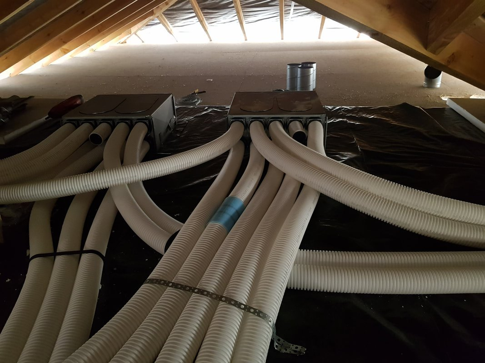
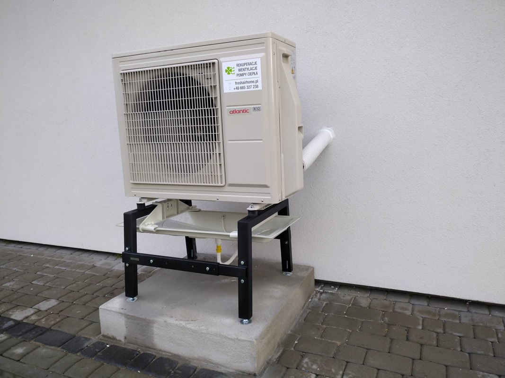
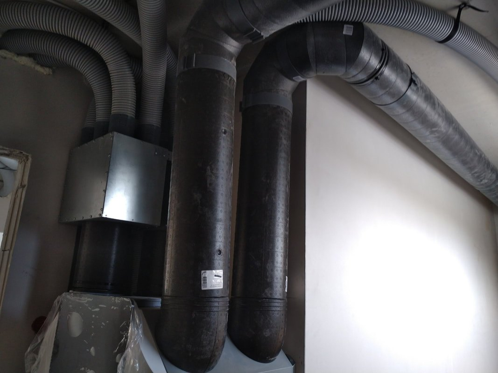
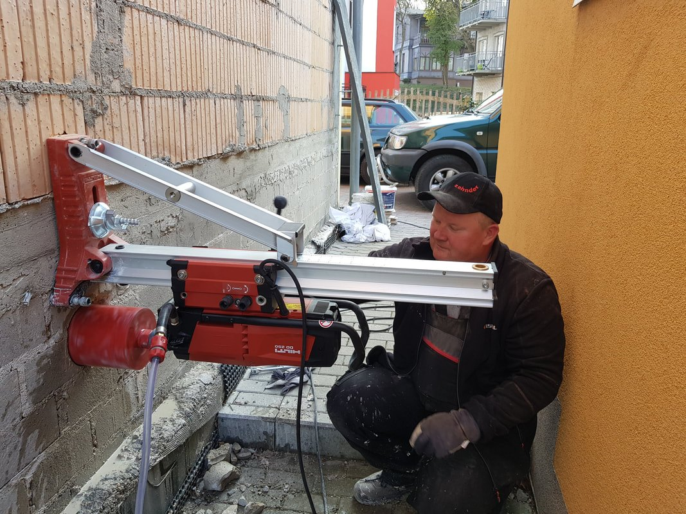
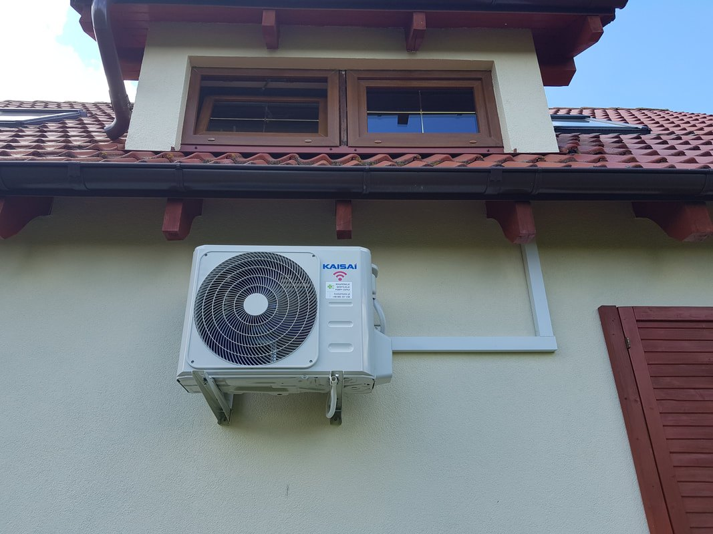

Projektujemy i montujemy rekuperację, wentylację mechaniczną, gruntowe wymienniki ciepła, klimatyzację i pompy ciepła. Siedziba w Rokocinie pod Starogardem Gdańskim, jeździmy po Pomorzu i po całej Polsce. Powiedz, na jakim etapie jest budowa - resztę rozrysujemy.

Trasy kanałów, miejsce na centralę i przejścia przez stropy trzeba ustawić, zanim wejdą tynki i wylewki. Później każdy metr kanału to przeróbka i zabudowa. Dlatego zanim cokolwiek zamontujemy, oglądamy projekt albo sam budynek i mówimy wprost, co da się poprowadzić, a czego nie.
Świeży nawiew, odzysk ciepła zimą, chłodzenie latem i ogrzewanie, które pracuje z wentylacją, a nie obok niej.
Dobór centrali, rozrys tras kanałów, montaż z rozdzielaczami i anemostatami, uruchomienie i regulacja. Centrale Zehnder, Nilan i pozostałych producentów z górnej półki.
Więcej o rekuperacji →Instalacje w domach, halach, biurach i budynkach publicznych. Przekroje kanałów dobieramy pod realny przepływ, żeby układ pracował cicho i równo na wszystkich nawiewach.
Zakres prac →Zimą wstępnie ogrzewa powietrze wpadające do domu, latem je schładza. Robimy układ powietrzny i glikolowy, razem z rekuperacją albo jako dołożenie do gotowej instalacji.
Jak działa GWC →Dobór mocy pod pomieszczenie i nasłonecznienie, przewierty, trasy chłodnicze schowane w bruzdach, montaż jednostek, próba szczelności i uruchomienie.
Zakres prac →Montaż urządzeń do ogrzewania i ciepłej wody, również w układzie z rekuperacją. Za nami szkolenie z doboru i instalacji pomp ciepła aroTherm Split marki Vaillant.
Zakres prac →Wymiana filtrów, czyszczenie wymiennika, sprawdzenie wydajności i ustawień centrali. Bierzemy też instalacje po innych wykonawcach, na zlecenie jednorazowe albo stałą umowę.
Zakres prac →Zużyte powietrze wychodzi z kuchni i łazienek, świeże wpada do pokoi i sypialni. W wymienniku oba strumienie mijają się i oddają ciepło, ale nigdy się nie mieszają.
Kratka w ścianie i komin też są wentylacją. Różnica polega na tym, ile masz nad nią kontroli i ile ciepła przy okazji ucieka.
Nie każdemu potrzebna jest rekuperacja. W starym, nieszczelnym domu grawitacja czasem wystarcza. Powiemy wprost, gdy tak będzie.
Wpisz podstawowe dane budynku, a policzymy wymagany strumień powietrza i moc urządzeń. To wynik orientacyjny, który daje punkt wyjścia do rozmowy.
Liczymy strumienie wywiewane zgodnie z normą PN-83/B-03430: kuchnia 70 m3/h przy kuchence gazowej i 50 przy elektrycznej, łazienka 50, osobne WC 30, pomieszczenie bez okna 15. Kontrolnie sprawdzamy 20 m3/h na osobę oraz wymianę liczoną z kubatury.
Zapotrzebowanie chłodnicze liczymy wskaźnikowo: od 75 do 110 W na metr kwadratowy zależnie od strony świata, z korektą na poddasze, przeszklenia i standard ocieplenia. Ostateczną moc dobieramy po obejrzeniu pomieszczenia.
Z zapasem na opory instalacji i tryb intensywny, żeby centrala nie pracowała bez przerwy na maksymalnych obrotach.
Najbliższa typowa moc jednostki. Za mała nie da rady w upał, za duża pracuje krótkimi cyklami i gorzej osusza powietrze.
Wynik z konfiguratora nie zastępuje projektu. Przy wycenie sprawdzamy układ pomieszczeń, miejsce na centralę i możliwe trasy kanałów, bo to one przesądzają o ostatecznym doborze.
Bez niespodzianek w trakcie: wiesz, co robimy, kiedy wchodzimy na budowę i co dostajesz na koniec.
Mówisz, co budujesz albo co masz już zrobione. Ustalamy, czy potrzebna jest wizyta na miejscu.
Rozrysowujemy trasy kanałów i dobieramy centralę pod metraż oraz liczbę pomieszczeń.
Dostajesz zakres, cenę i termin wejścia na budowę, zanim cokolwiek zamawiamy.
Kanały, centrala, rozdzielacze, anemostaty i sterowanie. Wchodzimy zgodnie z etapem budowy.
Pomiar wydajności, regulacja układu, pokazanie obsługi, a potem przeglądy i filtry.
Centrale, trasy kanałów, panele sterowania, klimatyzacja i pompy ciepła z domów, w których pracowaliśmy.





Papiery, które stoją za tym, co montujemy. Kliknij w dokument, żeby go powiększyć.


Krótkie odpowiedzi na to, co wraca w rozmowach o rekuperacji i klimatyzacji.
Da się, ale trzeba znaleźć miejsce na kanały: sufit podwieszany, zabudowa z płyty, poddasze albo garaż. Przy remoncie wchodzimy zwykle razem z ekipą wykończeniową. Przyjeżdżamy, oglądamy budynek i mówimy wprost, którędy da się to poprowadzić, a gdzie kanał byłby widoczny.
Na etapie stanu surowego zamkniętego, gdy stoją ściany i dach, a nie ma jeszcze tynków i wylewek. Wtedy kanały wchodzą w stropy i ścianki bez kucia. Warto zadzwonić jeszcze wcześniej, przy projekcie, żeby architekt zostawił miejsce na centralę.
To dwie różne rzeczy. Rekuperacja wymienia powietrze i odzyskuje ciepło, klimatyzacja chłodzi to, które już jest w pomieszczeniu. Razem tworzą sensowny układ: świeże powietrze przez cały rok plus chłodzenie w upały. Jeśli budujesz dom, warto zaplanować oba naraz, bo trasy da się poprowadzić przy jednej robocie.
Zwykle co 3-6 miesięcy, zależnie od otoczenia. Przy drodze albo w sąsiedztwie pól filtry brudzą się szybciej. Centrale sygnalizują to na panelu. Możemy przyjeżdżać na przeglądy albo dostarczać filtry i pokazać, jak wymienić je samodzielnie.
Cena zależy od metrażu, liczby pomieszczeń, wybranej centrali i tego, czy dochodzi gruntowy wymiennik ciepła. Wycenę robimy po obejrzeniu projektu albo budynku, żeby nie rzucać liczbą z sufitu. Zadzwoń i opisz dom, a powiemy, w jakich widełkach się to zmieści.
Tak. Bierzemy przeglądy, wymianę filtrów, czyszczenie wymiennika i regulację układu również po innych wykonawcach. Działamy na zlecenia jednorazowe i na stałe umowy serwisowe.
Jeden telefon wystarczy, żeby ustalić, co da się zrobić i ile to kosztuje.